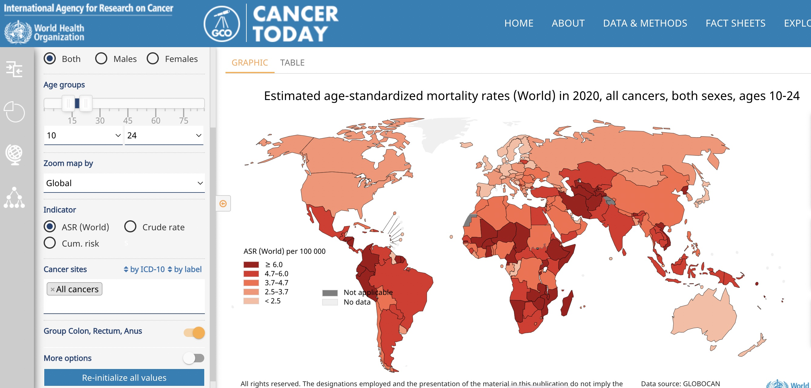

B1 Cancer across the globe
Vincent J. Carey, stvjc at channing.harvard.edu
May 22, 2026
Source:vignettes/B1_global.Rmd
B1_global.Rmd## Warning: multiple methods tables found for 'scale'## Warning: replacing previous import 'BiocGenerics::scale' by
## 'DelayedArray::scale' when loading 'SummarizedExperiment'Interactive cancer maps
- Twenty years ago the most common Geographic Information System was the paper map or road atlas
- Now our cell-phones can ask the internet how to get to where we want to go, efficiently
- Understanding how cancer events unfold in different geographic regions is important for public health
- Are there important environmental hazards at specific locations?
- Are there clues to genetic origins of particular cancers?
- Are culturally shared behaviors leading to increased risk?
- Even though we are comfortable with annotated maps, creating and using “cancer maps” to reason about cancer risk requires some training
- In this notebook we will work with some interactive maps on the web, and we will produce some maps using R programming
A basic concern in mapping cancer rates is discovery of “clusters”. A review of cancer cluster investigations was published in 2012. Results:
We reviewed 428 investigations evaluating 567 cancers of concern. An increase in incidence was confirmed for 72 (13%) cancer categories (including the category “all sites”). Three of those were linked (with variable degree of certainty) to hypothesized exposures, but only one investigation revealed a clear cause.
The conclusion of this report:
There are fundamental shortcomings to our current methods of investigating community cancer clusters. We recommend a multidisciplinary national dialogue on creative, innovative approaches to understanding when and why cancer and other chronic diseases cluster in space and time.
This motivates us to learn about map production and rate estimation in YES for CURE.
Exercises
Use the International Agency for Research on Cancer (IARC) map tool to survey mortality from cancer in 2020 for individuals aged 10-24. You should see something like the display below.

IARC map
B.1.1 True or False: Age standardized mortality from cancer in 2020 for persons aged 10-24 is greater in Vietnam than in neighboring countries.
Use the IARC map tool to produce a worldwide map of breast cancer incidence for women aged 60-79.
B.1.2 What is the Scandinavian country with largest estimate of age-standardized breast cancer incidence for women aged 60-79?